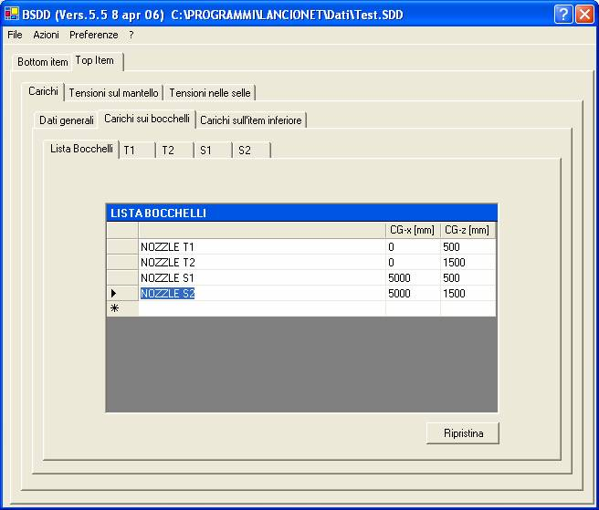

La scheda ‘Carichi sui bocchelli’ contiene uno schedario la cui prima scheda presenta la lista nominativa dei bocchelli

All’apertura di un nuovo lavoro viene preconfezionata una lista standard di quattro bocchelli come rappresentato in figura. Il pulsante ‘Ripristina’ serve a riportare nell’area di lavoro la lista preconfezionata.
E’ possibile inserire nuovi bocchelli (basta scrivere nell’ultima linea bianca), eliminare uno o più dei bocchelli definiti (selezionare l’intera riga corrispondente e premere il tasto ‘Canc’) e cambiare/inserire le coordinate di posizionamento del bocchello sull’apparecchio. Tali coordinate rappresenteranno il punto di applicazione delle forze che saranno assegnate nelle schede successive.
Avvertenze:
1) E’ fortemente raccomandato di iniziare la stringa di denominazione del bocchello con la parola NOZZLE seguita da un blank
2) Le coordinate di posizionamento si intendono come distanze del bocchello dal baricentro dell’apparecchio lungo gli assi coordinati
3) L’asse x è l’asse longitudinale dell’apparecchio, con origine nel centro della piastra di base della sella fissa
4) L’asse z è l’asse verticale rivolto verso il basso
5) Non è possibile fornire distanze lungo l’asse y in quanto il programma BSDD non prevede nell’attuale versione bocchelli laterali. E’ comunque sempre possibile simulare carichi prodotti da bocchelli laterali con bocchelli situati nel piano verticale dopo calcolo degli opportuni momenti di trasporto delle forze.